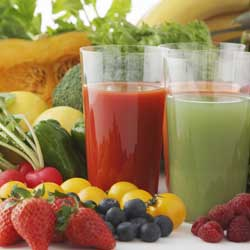

Juicing
There are many methods of juicing, from squeezing fruit by hand to wide-scale extraction with industrial equipment. Juicing is generally the preferred method of consuming large amounts of produce quickly and is often completed with a household appliance called a juicer, which may be as simple as a cone upon which fruit is mashed or as sophisticated as a variable-speed, motor-driven device. It may also refer to the act of extracting and then drinking juice or those who extract the juice. Juicing is different from buying juice in the supermarket because it is focuses on fresh pressed fruits and vegetables. Residential juicing is often practiced for dietary reasons or as a form of alternative medicine. Becoming first popular in the early 1990s, interests in juicing has soared in the last decade due to a number of books, videos, and claims, as well as, the quick dissemination due to the Internet. Films such as Fat, Sick and Nearly Dead, "Food Matters", and "Hungry for Change" has increased the sales of juicers.[1]
|